Project Glasswing
Securing critical software for the AI era
Introduction
April 7, 2026 - Today we’re announcing Project Glasswing1, a new initiative that brings together Amazon Web Services, Anthropic, Apple, Broadcom, Cisco, CrowdStrike, Google, JPMorganChase, the Linux Foundation, Microsoft, NVIDIA, and Palo Alto Networks in an effort to secure the world’s most critical software.
We formed Project Glasswing because of capabilities we’ve observed in a new frontier model trained by Anthropic that we believe could reshape cybersecurity. Claude Mythos2 Preview is a general-purpose, unreleased frontier model that reveals a stark fact: AI models have reached a level of coding capability where they can surpass all but the most skilled humans at finding and exploiting software vulnerabilities.
Mythos Preview has already found thousands of high-severity vulnerabilities, including some in every major operating system and web browser. Given the rate of AI progress, it will not be long before such capabilities proliferate, potentially beyond actors who are committed to deploying them safely. The fallout—for economies, public safety, and national security—could be severe. Project Glasswing is an urgent attempt to put these capabilities to work for defensive purposes.
As part of Project Glasswing, the launch partners listed above will use Mythos Preview as part of their defensive security work; Anthropic will share what we learn so the whole industry can benefit. We have also extended access to a group of over 40 additional organizations that build or maintain critical software infrastructure so they can use the model to scan and secure both first-party and open-source systems. Anthropic is committing up to $100M in usage credits for Mythos Preview across these efforts, as well as $4M in direct donations to open-source security organizations.
Project Glasswing is a starting point. No one organization can solve these cybersecurity problems alone: frontier AI developers, other software companies, security researchers, open-source maintainers, and governments across the world all have essential roles to play. The work of defending the world’s cyber infrastructure might take years; frontier AI capabilities are likely to advance substantially over just the next few months. For cyber defenders to come out ahead, we need to act now.
Cybersecurity in the age of AI
The software that all of us rely on every day—responsible for running banking systems, storing medical records, linking up logistics networks, keeping power grids functioning, and much more—has always contained bugs. Many are minor, but some are serious security flaws that, if discovered, could allow cyberattackers to hijack systems, disrupt operations, or steal data.
We have already seen the serious consequences of cyberattacks for important corporate networks, healthcare systems, energy infrastructure, transport hubs, and the information security of government agencies across the world. On the global stage, state-sponsored attacks from actors like China, Iran, North Korea, and Russia have threatened to compromise the infrastructure that underpins both civilian life and military readiness. Even smaller-scale attacks, such as those where individual hospitals or schools are targeted, can still inflict substantial economic damage, expose sensitive data, and even put lives at risk. The current global financial costs of cybercrime are challenging to estimate, but might be around $500B every year.
Many flaws in software go unnoticed for years because finding and exploiting them has required expertise held by only a few skilled security experts. With the latest frontier AI models, the cost, effort, and level of expertise required to find and exploit software vulnerabilities have all dropped dramatically. Over the past year, AI models have become increasingly effective at reading and reasoning about code—in particular, they show a striking ability to spot vulnerabilities and work out ways to exploit them. Claude Mythos Preview demonstrates a leap in these cyber skills—the vulnerabilities it has spotted have in some cases survived decades of human review and millions of automated security tests, and the exploits it develops are increasingly sophisticated.
Ten years after the first DARPA Cyber Grand Challenge, frontier AI models are now becoming competitive with the best humans at finding and exploiting vulnerabilities. Without the necessary safeguards, these powerful cyber capabilities could be used to exploit the many existing flaws in the world’s most important software. This could make cyberattacks of all kinds much more frequent and destructive, and empower adversaries of the United States and its allies. Addressing these issues is therefore an important security priority for democratic states.
Although the risks from AI-augmented cyberattacks are serious, there is reason for optimism: the same capabilities that make AI models dangerous in the wrong hands make them invaluable for finding and fixing flaws in important software—and for producing new software with far fewer security bugs. Project Glasswing is an important step toward giving defenders a durable advantage in the coming AI-driven era of cybersecurity.

Identifying vulnerabilities and exploits with Claude Mythos Preview
Over the past few weeks, we have used Claude Mythos Preview to identify thousands of zero-day vulnerabilities (that is, flaws that were previously unknown to the software’s developers), many of them critical, in every major operating system and every major web browser, along with a range of other important pieces of software.
In a post on our Frontier Red Team blog, we provide technical details for a subset of these vulnerabilities that have already been patched and, in some cases, the ways that Mythos Preview found to exploit them. It was able to identify nearly all of these vulnerabilities—and develop many related exploits—entirely autonomously, without any human steering. The following are three examples:
- Mythos Preview found a 27-year-old vulnerability in OpenBSD—which has a reputation as one of the most security-hardened operating systems in the world and is used to run firewalls and other critical infrastructure. The vulnerability allowed an attacker to remotely crash any machine running the operating system just by connecting to it;
- It also discovered a 16-year-old vulnerability in FFmpeg—which is used by innumerable pieces of software to encode and decode video—in a line of code that automated testing tools had hit five million times without ever catching the problem;
- The model autonomously found and chained together several vulnerabilities in the Linux kernel—the software that runs most of the world’s servers—to allow an attacker to escalate from ordinary user access to complete control of the machine.
We have reported the above vulnerabilities to the maintainers of the relevant software, and they have all now been patched. For many other vulnerabilities, we are providing a cryptographic hash of the details today (see the Red Team blog), and we will reveal the specifics after a fix is in place.
Evaluation benchmarks such as CyberGym reinforce the substantial difference between Mythos Preview and our next-best model, Claude Opus 4.6:
Cybersecurity Vulnerability Reproduction
CyberGym
In addition to our own work, many of our partners have already been using Claude Mythos Preview for several weeks. This is what they’ve found:
“AI capabilities have crossed a threshold that fundamentally changes the urgency required to protect critical infrastructure from cyber threats, and there is no going back. Our foundational work with these models has shown we can identify and fix security vulnerabilities across hardware and software at a pace and scale previously impossible. That is a profound shift, and a clear signal that the old ways of hardening systems are no longer sufficient. Providers of technology must aggressively adopt new approaches now, and customers need to be ready to deploy. That is why Cisco joined Project Glasswing—this work is too important and too urgent to do alone.”
Anthony Grieco
SVP & Chief Security & Trust Officer, Cisco
“At AWS, we build defenses before threats emerge, from our custom silicon up through the technology stack. Security isn't a phase for us; it's continuous and embedded in everything we do. Our teams analyze over 400 trillion network flows every day for threats, and AI is central to our ability to defend at scale. We've been testing Claude Mythos Preview in our own security operations, applying it to critical codebases, where it's already helping us strengthen our code. We're bringing deep security expertise to our partnership with Anthropic and are helping to harden Claude Mythos Preview so even more organizations can advance their most ambitious work with security that sets the standard.”
Amy Herzog
Vice President and CISO, Amazon Web Services
“As we enter a phase where cybersecurity is no longer bound by purely human capacity, the opportunity to use AI responsibly to improve security and reduce risk at scale is unprecedented. Joining Project Glasswing, with access to Claude Mythos Preview, allows us to identify and mitigate risk early and augment our security and development solutions so we can better protect customers and Microsoft. When tested against CTI-REALM, our open-source security benchmark, Claude Mythos Preview showed substantial improvements compared to previous models. We look forward to partnering with Anthropic and the broader industry to improve security outcomes for all.”
Igor Tsyganskiy
EVP of Cybersecurity and Microsoft Research, Microsoft
“The window between a vulnerability being discovered and being exploited by an adversary has collapsed—what once took months now happens in minutes with AI. Claude Mythos Preview demonstrates what is now possible for defenders at scale, and adversaries will inevitably look to exploit the same capabilities. That is not a reason to slow down; it’s a reason to move together, faster. If you want to deploy AI, you need security. That is why CrowdStrike is part of this effort from day one.”
Elia Zaitsev
Chief Technology Officer, CrowdStrike
“In the past, security expertise has been a luxury reserved for organizations with large security teams. Open source maintainers—whose software underpins much of the world’s critical infrastructure—have historically been left to figure out security on their own. Open source software constitutes the vast majority of code in modern systems, including the very systems AI agents use to write new software. By giving the maintainers of these critical open source codebases access to a new generation of AI models that can proactively identify and fix vulnerabilities at scale, Project Glasswing offers a credible path to changing that equation. This is how AI-augmented security can become a trusted sidekick for every maintainer, not just those who can afford expensive security teams.”
Jim Zemlin
CEO, The Linux Foundation
“Promoting the cybersecurity and resiliency of the financial system is central to JPMorganChase's mission, and we believe the industry is strongest when leading institutions work together on shared challenges. Project Glasswing provides a unique, early stage opportunity to evaluate next-generation AI tools for defensive cybersecurity across critical infrastructure both on our own terms and alongside respected technology leaders. We will take a rigorous, independent approach to determining how to proceed and where we can help. Anthropic's initiative reflects the kind of forward-looking, collaborative approach that this moment demands.”
Pat Opet
Chief Information Security Officer, JPMorganChase
“Google is pleased to see this cross-industry cybersecurity initiative coming together and to make Mythos Preview available to participants via Vertex AI. It's always been critical that the industry work together on emerging security issues, whether it's post-quantum cryptography, responsible zero-day disclosure, secure open source software, or defense against AI-based attacks. We have long believed that AI poses new challenges and opens new opportunities in cyber defense, which is why we've built AI-powered tools—such as Big Sleep and CodeMender—to find and fix critical software flaws. We will continue investing in our leading cybersecurity platform and a culture focused on protecting users, customers, the ecosystem, and national security.”
Heather Adkins
VP of Security Engineering, Google
“Over the past few weeks, we’ve had access to the Claude Mythos Preview model, using it to identify complex vulnerabilities that prior-generation models missed entirely. This is not only a game changer for finding previously hidden vulnerabilities, but it also signals a dangerous shift where attackers can soon find even more zero-day vulnerabilities and develop exploits faster than ever before. It’s clear that these models need to be in the hands of open source owners and defenders everywhere to find and fix these vulnerabilities before attackers get access. Perhaps even more important: everyone needs to prepare for AI-assisted attackers. There will be more attacks, faster attacks, and more sophisticated attacks. Now is the time to modernize cybersecurity stacks everywhere. We commend Anthropic for partnering with the industry to ensure these powerful capabilities prioritize defense first.”
Lee Klarich
Chief Product & Technology Officer, Palo Alto Networks
The powerful cyber capabilities of Claude Mythos Preview are a result of its strong agentic coding and reasoning skills. For example, as shown in the evaluation results below, the model has the highest scores of any model yet developed on a variety of software coding tasks.
SWE-bench Pro
Terminal-Bench 2.0
SWE-bench Multimodal (internal implementation)
SWE-bench Multilingual
SWE-bench Verified
• SWE-bench Verified, Pro, and Multilingual: Our memorization screens flag a subset of problems in these SWE-bench evals. Excluding any problems that show signs of memorization, Mythos Preview’s margin of improvement over Opus 4.6 holds. • SWE-bench Multimodal: We used an internal implementation for both Mythos Preview and Opus 4.6. Scores are not directly comparable to public leaderboard scores. • Terminal-Bench 2.0: We used the Terminus-2 harness with adaptive thinking at maximum effort and a total task budget of 1 million tokens for each task. All experiments used 1× guaranteed/3× ceiling resource allocation averaged over five attempts per task. Mythos Preview scored 92.1% when we increased timeout limits to four hours and used the Terminal-Bench 2.1 updates.
GPQA Diamond
Humanity’s Last Exam
Humanity’s Last Exam: We have found Mythos still performs well on HLE at low effort, which could indicate some level of memorization.
BrowseComp
OSWorld-Verified
BrowseComp: Claude Mythos Preview scores higher than Opus 4.6 while using 4.9× fewer tokens.
More information on the model’s capabilities, its safety properties, and its general characteristics can be found in the Claude Mythos Preview system card.
We do not plan to make Claude Mythos Preview generally available, but our eventual goal is to enable our users to safely deploy Mythos-class models at scale—for cybersecurity purposes, but also for the myriad other benefits that such highly capable models will bring. To do so, we need to make progress in developing cybersecurity (and other) safeguards that detect and block the model’s most dangerous outputs. We plan to launch new safeguards with an upcoming Claude Opus model, allowing us to improve and refine them with a model that does not pose the same level of risk as Mythos Preview3.
Plans for Project Glasswing
Today’s announcement is the beginning of a longer-term effort. To be successful, it will require broad involvement from across the technology industry and beyond.
Project Glasswing partners will receive access to Claude Mythos Preview to find and fix vulnerabilities or weaknesses in their foundational systems—systems that represent a very large portion of the world’s shared cyberattack surface. We anticipate this work will focus on tasks like local vulnerability detection, black box testing of binaries, securing endpoints, and penetration testing of systems.
Anthropic’s commitment of $100M in model usage credits to Project Glasswing and additional participants will cover substantial usage throughout this research preview. Afterward, Claude Mythos Preview will be available to participants at $25/$125 per million input/output tokens (participants can access the model on the Claude API, Amazon Bedrock, Google Cloud’s Vertex AI, and Microsoft Foundry).
In addition to our commitment of model usage credits, we’ve donated $2.5M to Alpha-Omega and OpenSSF through the Linux Foundation, and $1.5M to the Apache Software Foundation to enable the maintainers of open-source software to respond to this changing landscape (maintainers interested in access can apply through the Claude for Open Source program).
We intend for this work to grow in scope and continue for many months, and we’ll share as much as we can so that other organizations can apply the lessons to their own security. Partners will, to the extent they’re able, share information and best practices with each other; within 90 days, Anthropic will report publicly on what we’ve learned, as well as the vulnerabilities fixed and improvements made that can be disclosed. We will also collaborate with leading security organizations to produce a set of practical recommendations for how security practices should evolve in the AI era. This will potentially include:
- Vulnerability disclosure processes;
- Software update processes;
- Open-source and supply-chain security;
- Software development lifecycle and secure-by-design practices;
- Standards for regulated industries;
- Triage scaling and automation; and
- Patching automation.
Anthropic has also been in ongoing discussions with US government officials about Claude Mythos Preview and its offensive and defensive cyber capabilities. As we noted above, securing critical infrastructure is a top national security priority for democratic countries—the emergence of these cyber capabilities is another reason why the US and its allies must maintain a decisive lead in AI technology. Governments have an essential role to play in helping maintain that lead, and in both assessing and mitigating the national security risks associated with AI models. We are ready to work with local, state, and federal representatives to assist in these tasks.
We are hopeful that Project Glasswing can seed a larger effort across industry and the public sector, with all parties helping to address the biggest questions around the impact of powerful models on security. We invite other AI industry members to join us in helping to set the standards for the industry. In the medium term, an independent, third-party body—one that can bring together private- and public-sector organizations—might be the ideal home for continued work on these large-scale cybersecurity projects.
APPENDIX
- The project is named for the glasswing butterfly, Greta oto. The metaphor can be applied in two ways: the butterfly’s transparent wings let it hide in plain sight, much like the vulnerabilities discussed in this post; they also allow it to evade harm—like the transparency we’re advocating for in our approach.
- From the Ancient Greek for “utterance” or “narrative”: the system of stories through which civilizations made sense of the world.
- Security professionals whose legitimate work is affected by these safeguards will be able to apply to an upcoming Cyber Verification Program.